Ride or Die: прохождение миссии GTA 6
Опубликовано:
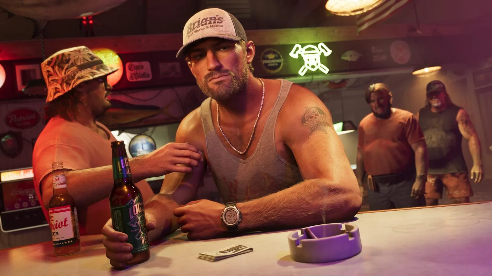
Коротко
- Рэпер DWNPLY обидел Дре’Куана, и тот хочет отомстить — увести его машину. Джейсон под видом фаната идёт на автограф-сессию DWNPLY в магазине Eris: нужны кроссовки для пропуска в VIP-зону, ключи из кармана — и погоня до мастерской.
- Глава 3, миссия 19 из 26. Играем за: Джейсон.
- Награда: нет.
Миссия коротко
| Глава | 3. Tits Ass Drug Money |
| Номер в сюжете | 19 |
| Играем за | Джейсон |
| Кто даёт | Дре’Куан |
| Где начинается | Вайс-Сити, Crosstown — карниз у Jack of Hearts |
| Условие | после Credit Check |
| Награда | нет |
| Переиграть | нельзя — сохраняйтесь вручную |
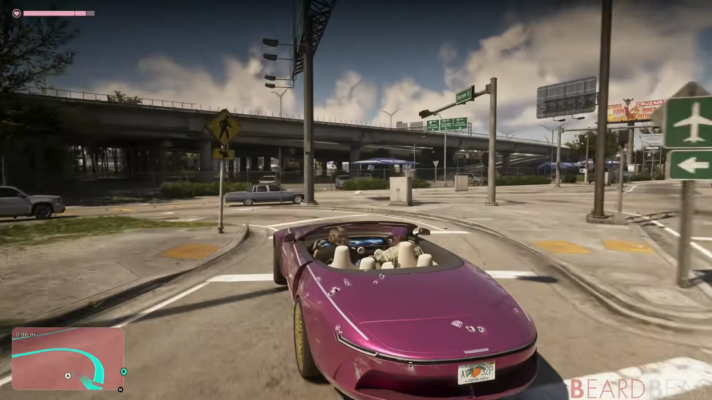
Где начинается
Прохождение по шагам
- Встретьтесь с Дре’Куаном у Jack of Hearts — примерно через день после Credit Check. Приходите Джейсоном, без Лусии, и сядьте на карниз у клуба.
- Езжайте в магазин Eris на набережной Downtown.
- Добудьте кроссовки DWNPLY: наверху справа от диджея перекупщик продаёт пару за $1 580. Бесплатно: идите за ним на улицу и толкните его или бросьте баскетбольный мяч с лотка справа — он уронит пакет.
- Идите за Дре’Куаном в VIP-зону — покажите кроссовки охраннику, ✕ (A).
- Отдайте кроссовки DWNPLY (он слева от бара) на автограф и, пока он пишет, вытащите ключи — зажмите △ (Y).
- Бегите на парковку и посигнальте ключом, чтобы найти розовый кабриолет.
- Угоните машину, дождитесь Дре’Куана, уйдите от людей DWNPLY и гоните в Stockyard Speedshop.

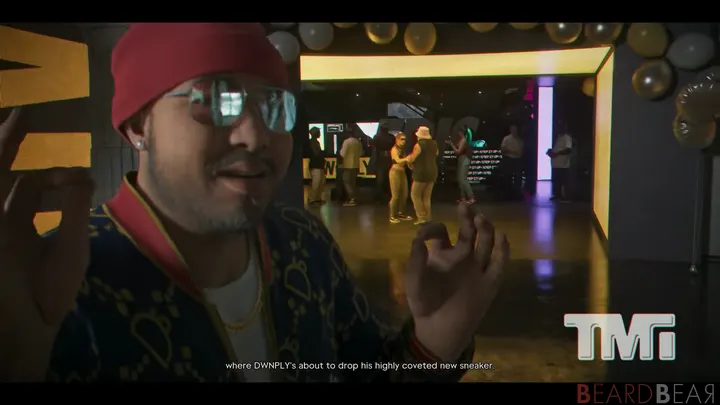

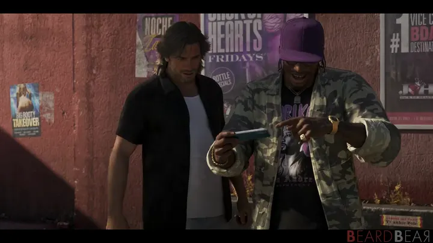

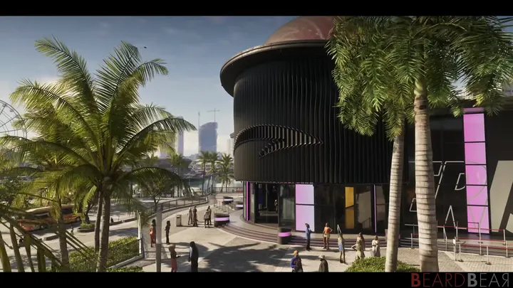

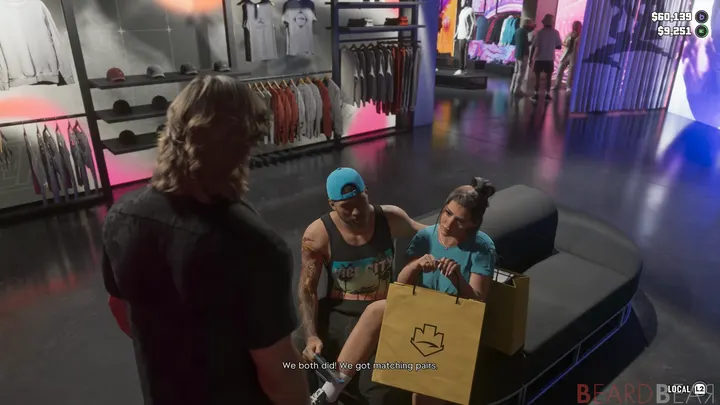

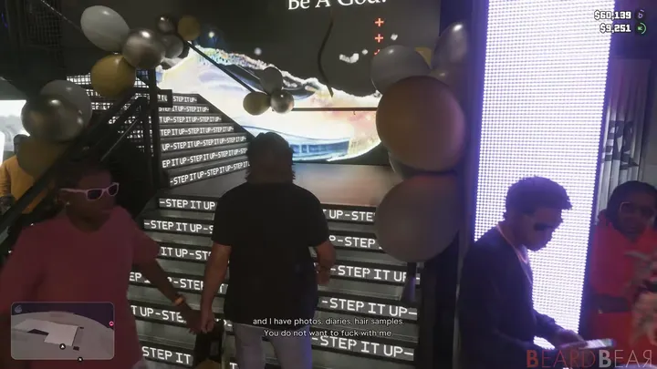

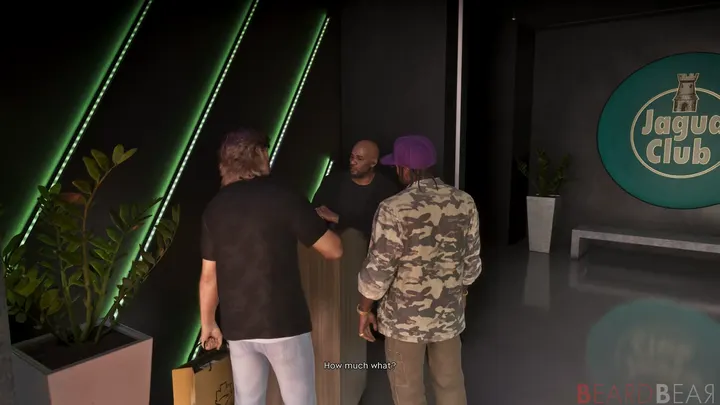

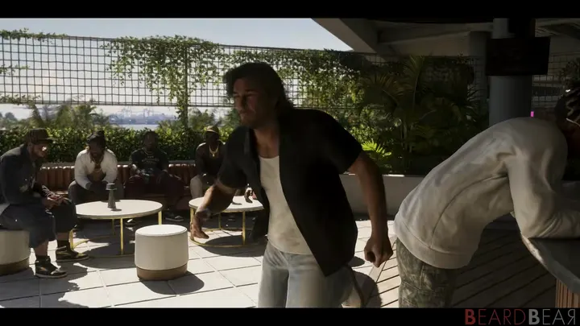

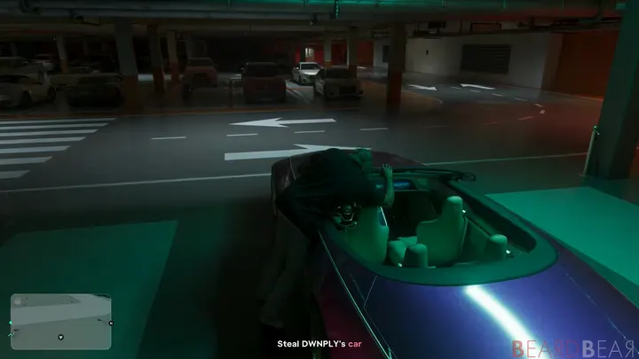

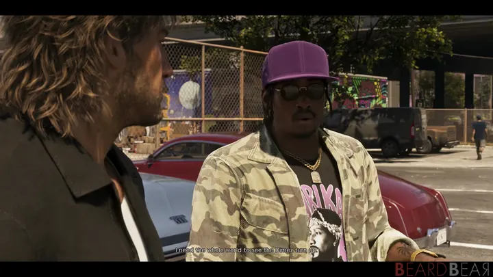
Советы
- Кроссовки можно не покупать — денег за миссию не дают, и $1 580 уйдут впустую.
- Бандита на капоте сбросьте резким манёвром.
- Чтобы оторваться, выйдите из красной зоны на карте.
Подробности и секреты
- Денежной награды нет (theclick, gta.guide).
- Угнанную машину Real Dimez потом используют в клипе в Cooties (Outputlag, gta6.house).
- По данным clutchbase, магазин Eris стоит у Sahara Arena.
Что можно пропустить
Пропустить нечего.
Частые вопросы
Как не платить за кроссовки в Ride or Die?
Бросьте баскетбольный мяч — продавец уронит пакет.
Сколько стоят кроссовки DWNPLY?
$1 580.
Как получить кроссовки бесплатно в Ride or Die?
Идите за перекупщиком на улицу и толкните его или бросьте в него баскетбольный мяч — он уронит пакет.
Где машина DWNPLY в Ride or Die?
На парковке у Eris — посигнальте ключом, и розовый кабриолет отзовётся.
Источники: PowerPyx, «GTA 6 Ride Or Die (Meet Dre’Quan) Walkthrough», 18–19.11.2026; GTA BOOM, Game8, PowerPyx, VGC, games.gg, gta6-life, wikigtavi, gta.guide, theclick, clutchbase — Ride or Die, 18–28.11.2026. Кнопки указаны для PS5, в скобках — Xbox. Названия миссий — как в английской версии игры.